TIRUMALA

CITY : TIRUPATI
Tirumala is a spiritual town in Tirupati district of the Indian state of Andhra Pradesh. It is one of the suburbs of the Tirupati urban agglomeration. The town is a part of Tirupati Urban Development Authority and located in Tirupati mandal of Tirupati revenue division. It is a hill town where Tirumala Venkateshvara Temple is located, a popular shrine of Vishnu...
KANAKADURGA TEMPLE
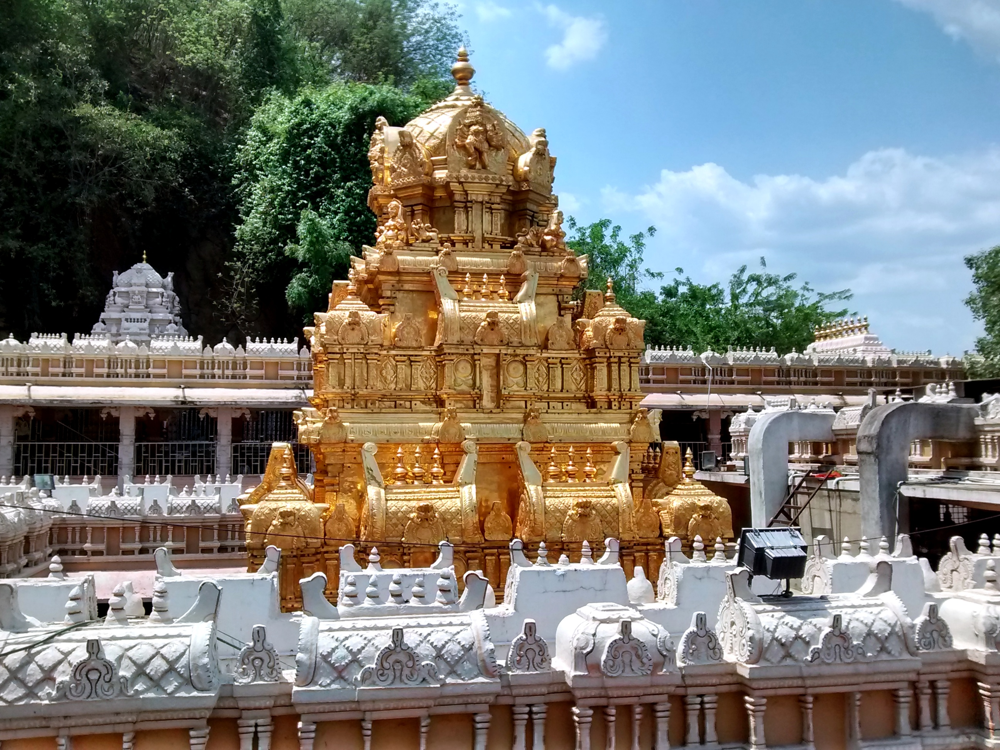
CITY : VIJAYAWADA
Kanaka Durga Temple, also known as Sri Kanaka Durgamma Devasthanam, is a Hindu temple dedicated to Kanaka Durga. The deity in this temple is also popularly referred as Kanaka Durga. The temple is located in Vijayawada, Andhra Pradesh, India on the Indrakeeladri Hills on the banks of Krishna River.It is mentioned in the Hindu scriptures...
SIMHACHALAM
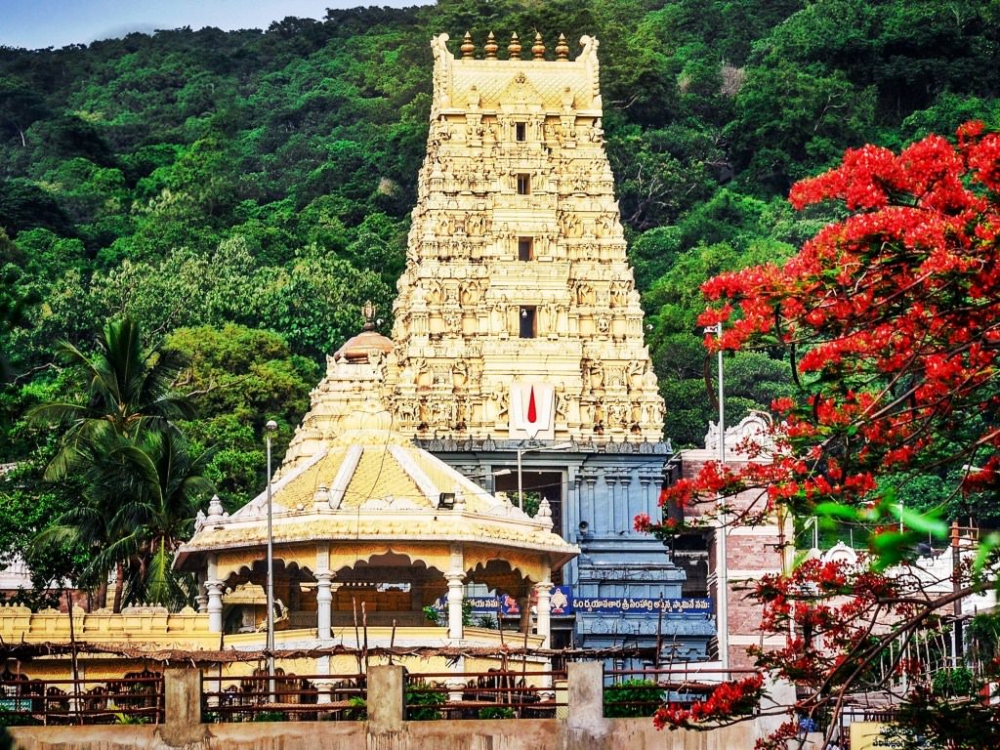
CITY : VISAHKAPATANAM
Sri Varaha Lakshmi Narasimha temple, Simhachalam, is a Hindu temple situated on the Simhachalam Hill Range,which is 300 metres above the sea level in Visakhapatnam, Andhra Pradesh, India. It is dedicated to Lord Vishnu, who is worshipped there as Varaha Narasimha.The temple was built by Akthayi Senapathi, on the command of Narasingha...
SRISAILAM
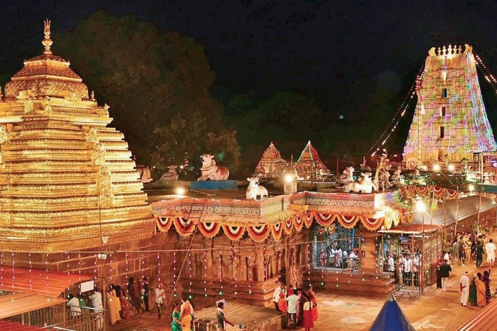
CITY : KURNOOL
Sri Bhramaramba Mallikarjuna Temple or Srisailam Temple is a Hindu temple dedicated to the deities Shiva and Parvati, located at Srisailam in the Indian state of Andhra Pradesh.It is significant to the Hindu sects of both Shaivism and Shakof the Hindu Goddess Shiva is worshiped as Mallikarjutism as this temple is referred to as one of the twelve Jyotirlingas...
ANNAVARAM
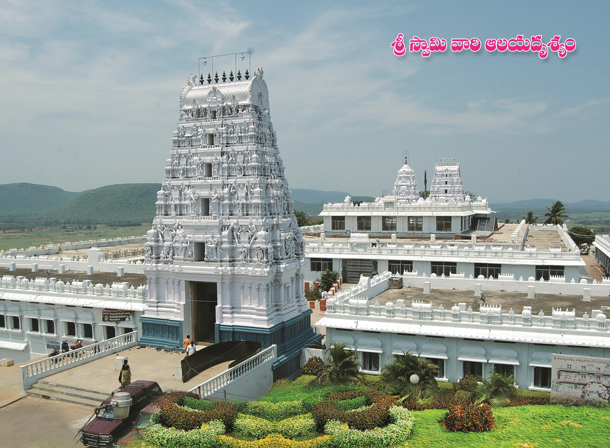
CITY : ANANTAPUR
Sri Veera Venkata Satyanarayana Swamy Temple or Annavaram Temple is a Hindu-Vaishnavite temple situated at Annavaram town in Kakinada district, of Andhra Pradesh state, India.The temple is on a hillock named Ratnagiri[1] and is dedicated to Veera Venkata Satyanarayana, an incarnation of Lord Vishnu.The temple is situated on Ratnagiri hill on the banks of river Pampa...
KANIPAKAM

CITY : CHITOOR
Vinayaka Temple or Sri Varasidhi Vinayaka Swamy Temple is a Hindu temple of Ganesha. It is located at Kanipakam in Chittoor district of Andhra Pradesh, India.The temple is about 11 km from Chittoor and 68 km from Tirupati.The temple was constructed in the early 11th century CE by the Chola Emperor Kulottunga I and was expanded further in 1336 by the Emperors of Vijayanagara...
ROSE HILL CHURCH
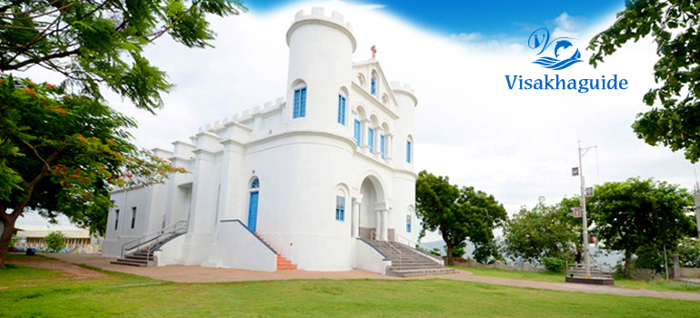
CITY : VISAKHAPATANAM
Ross Hill Church is a splendid attraction in Visakhapatnam that draws tourists and religious followers in large numbers. It is one of the few locations that can be climbed to get a fabulous view of the quaint city and the Port area.The attraction is frequently visited by photographers and nature lovers especially to view the beautiful sunrises and sunsets...
LEPAKSHI
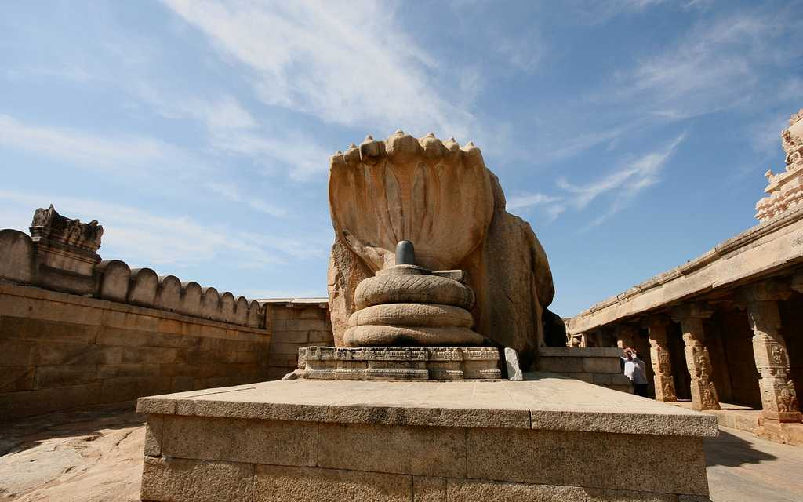
CITY : ANANTHAPURAM
Veerabhadra temple is a Hindu temple located in the Lepakshi, in the state of Andhra Pradesh, India. The temple is dedicated to the Virabhadra, a fierce incarnation of Lord Shiva. Built in the 16th century, the architectural features of the temple are in the Vijayanagara style with profusion of carvings and paintings at almost every exposed surface of the temple...
SRI YAGANTI UMAMAHESWARA
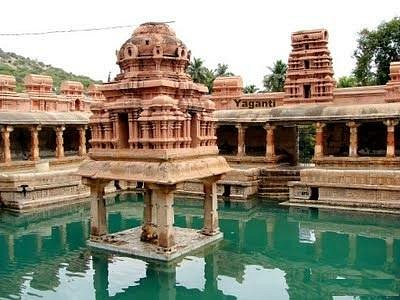
CITY : NANDYALA
Yaganti Temple or Sri Yaganti Uma Maheswara Temple is a temple of Shiva in Nandyal district in the India state of Andhra Pradesh. It was built according to Vaishnavaite traditions.A feature of this temple is its Pushkarini, a small pond of water on the temple premises. Water flows into this Pushkarini from the bottom of hill through the mouth of a Nandi (bull)...
GUNADALA MATHA SHRINE
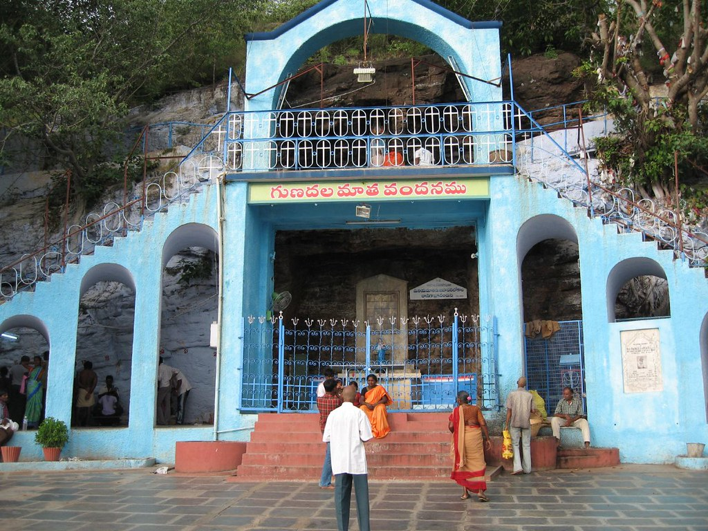
CITY : VIJAYAWADA
Gunadala Matha Shrine (also: Our Lady of Lourdes or Mary Matha Church),located in the city of Vijayawada, Andhra Pradesh,[3] is a renowned Catholic pilgrimage site attracting approximately 10 lakh devotees during its annual festival. It is considered the second biggest worship place of Mary, mother of Jesus after Basilica of Our Lady of Good Health at Velankanni in Tamil Nadu...
SRI KALAHASTEESWARA
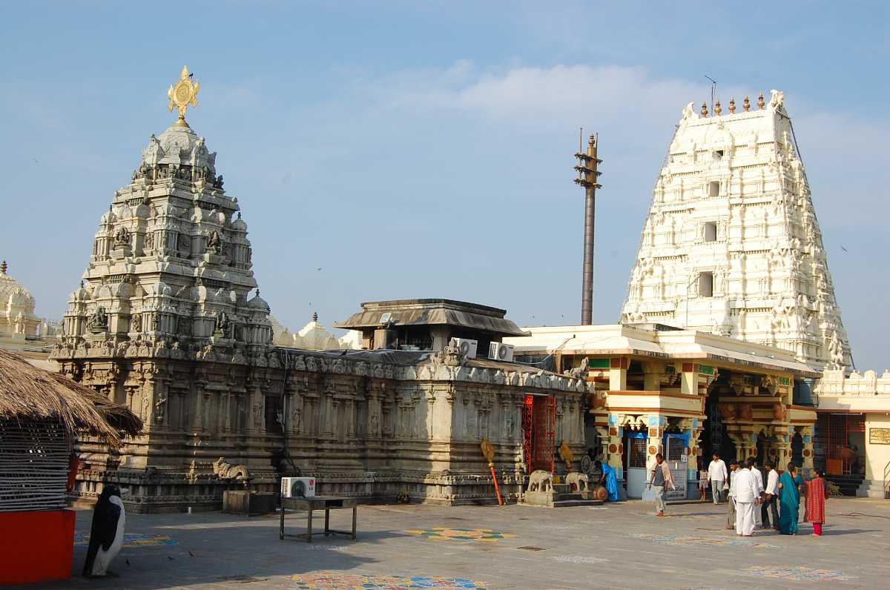
CITY : CHITOOR
The Srikalahasti Temple is located in the town of Srikalahasti, in Tirupati district in the state of Andhra Pradesh, India. According to regional tradition, it is said to be the site where Kannappa was ready to offer both his eyes to cover blood flowing from the linga before Shiva stopped him and granted him moksha.Srikalahasti temple, situated near Tirupati...
JUMMA MASJID
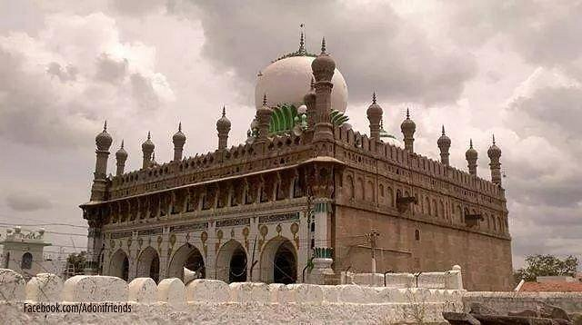
CITY : KURNOOL
Jumma Masjid is a 17th century mosque built by Madu Qadiri who was a governor who served Adil Shah. The splendid architecture of the mosque includes beautiful minarets, magnificent domes and spacious prayer halls making it a tourist attraction as well. It is located in the kurnool city. It is the most ancient mosque where hunderds of people offers their prayers...
DWARAKA TIRUMALA
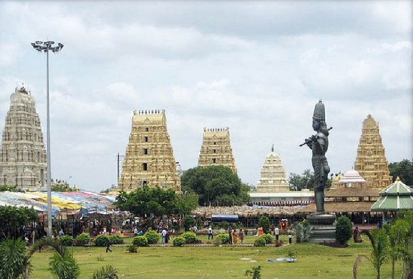
CITY : ELURU
Dwaraka Tirumala is a census town in Eluru district of the Indian state of Andhra Pradesh. It is located in Dwaraka Tirumala mandal of Jangareddygudem revenue division. The Venkateswara Temple is a pilgrimage center for hindus, which is the abode of Lord Venkateswara. This is often referred by the locals as Chinna Tirupati....
COLES CENTENIAL CHURCH
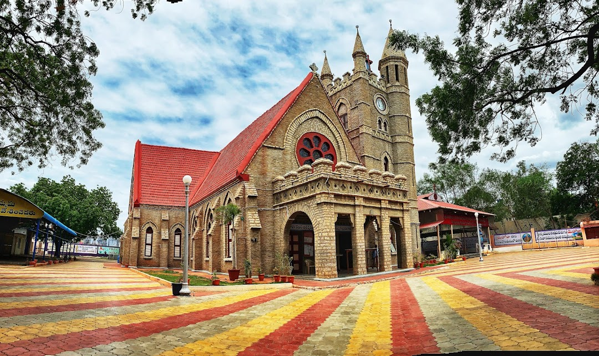
CITY : KURNOOL
The church, a short hop away from the Konda Reddy Buruju, is an exquisite Gothic structure with a stone-brick fagade, red-tiled roofs and tinted windows. The spacious confines of the building can house around 2,000 people.The church was named Coles Centennial Baptist Telugu Church to mark the century-long work of an American mission in the region.
Bhadrachalam
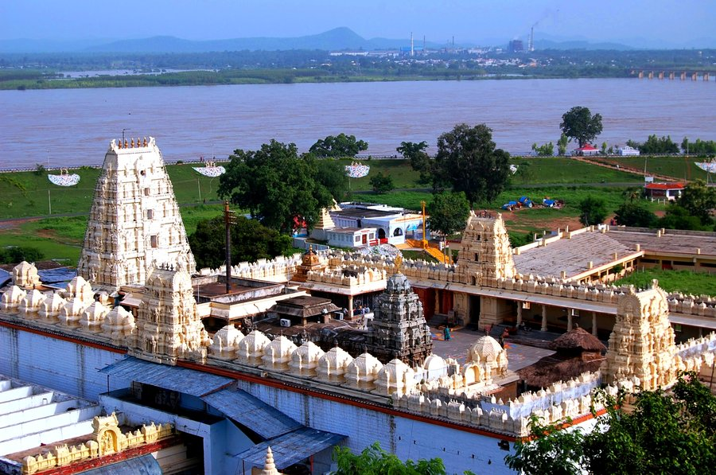
CITY : BHADRACHALAM
Bhadrachalam is a census town in Bhadradri Kothagudem district in the Indian state of Telangana.[3] It is an important Hindu pilgrimage town with the Bhadrachalam Temple of Lord Rama, situated on the banks of Godavari river.The town has a documented history of Lord Sri Rama temple constructed c. 17th century CE by Kancherla Gopanna...
RANGANATHA TEMPLE
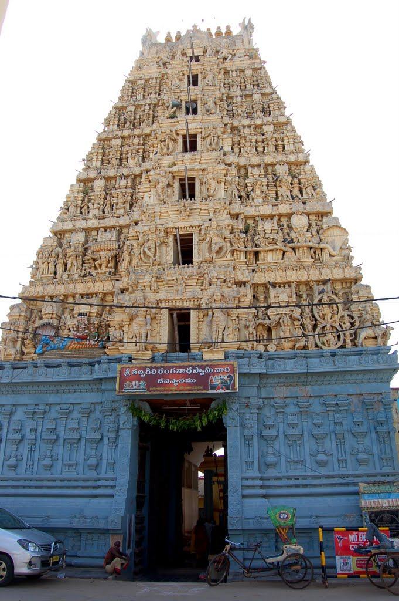
CITY : NELLORE
The Sri Ranganthaswami Temple in Nellore, Andhra Pradesh, India is a Hindu temple dedicated to Lord Ranganatha a resting form of Lord Vishnu. This temple, also called Talpagiri Ranganathaswami temple or Ranganayakulu is one of the oldest temples in Nellore. It is located on the banks of the Penna River.Just before the main entrance of the temple is a huge tower, called Gaaligopura...
AHOBILAM TEMPLE
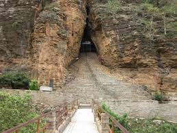
CITY : AHOBILAM
Ahobilam is a town and holy site in the Allagadda mandal of Nandyal district in the Indian state of Andhra Pradesh.[1] It is surrounded by picturesque hills of the Eastern Ghats with several mountain hills and gorges. It is the centre of worship of Narasimha, the lion-headed avatar of Vishnu, to whom the nine Hindu temples and other shrines all dedicated.